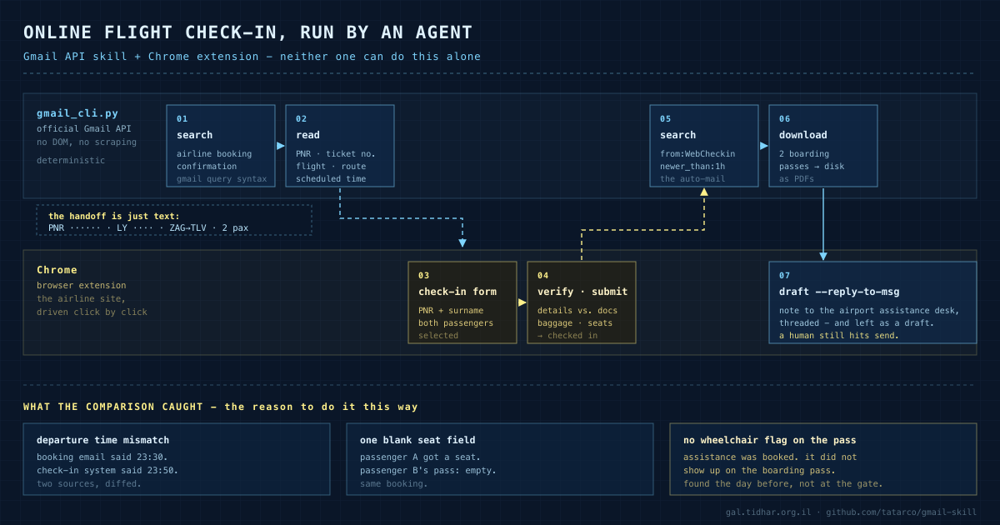

Gmail API · Claude Code skills · browser handoff
I gave my agent my inbox, then it checked my parents in for their flight
Everyone building agents eventually tries to automate email through the browser, and everyone eventually regrets it. I replaced it with 260 lines of Python over the official Gmail API. Then I pointed it at a real errand - checking two elderly relatives in for a flight - and let the browser do only the part email can't. It worked, and it caught three things I would have missed.

The thing that was actually broken
I already had a Chrome extension my agent could drive - clicks, forms, screenshots, the lot. So the obvious move was to let it drive Gmail too. That works right up until it doesn't: the DOM shifts, a message renders lazily, an attachment lands in ~/Downloads under a name nobody predicted, and replying inside a thread means clicking three things in the correct order. Each of those is a flaky step dropped into the middle of an otherwise deterministic task, and flaky steps compound.
Meanwhile Google has shipped a perfectly good API for this since forever. The whole skill is one file:
python3 gmail_cli.py search "from:airline.com subject:booking newer_than:7d"
python3 gmail_cli.py read 198f2c0a1b3d4e5f
python3 gmail_cli.py download 198f2c0a1b3d4e5f --out ./attachments
python3 gmail_cli.py draft --reply-to-msg 198f2c0a1b3d4e5f --body-file reply.txt
python3 gmail_cli.py send --draft r-88213...Seven commands. search takes the exact query syntax you already type into the Gmail box, so the agent doesn't need a new mental model. read returns headers plus a decoded plain-text body. download writes attachment bytes to a path you chose. And draft --reply-to-msg <id> sets In-Reply-To, References, the Re: subject and the threadId, so the reply lands in the thread rather than starting a lonely new one.
The browser didn't get deleted. It got demoted to what it's good at: everything that isn't email.
What it takes to set up
Less than you'd think, and nothing you have to pay for. In Google Cloud Console, on the account you want to drive:
- Create (or reuse) a project.
- Enable the Gmail API.
- OAuth consent screen → External, then add your own address as a Test user. Test mode never expires for your own account, so there is no app-verification review to sit through.
- Credentials → OAuth client ID → Desktop app → download the JSON as
credentials.jsonnext to the script. python3 gmail_cli.py auth→ one consent screen, once.
token.json is written beside the script at mode 600 and refreshes itself from then on. Full walkthrough, including the TLS-interception gotcha if you're behind a corporate proxy, is in SETUP.md.
The two lines that make this safe to leave switched on
First: the scopes are gmail.modify and gmail.send. There is deliberately no permanent-delete scope. The worst a badly-worded instruction can do is archive something. Revoking is one click in your Google account plus deleting token.json - that's the entire kill switch.
Second, and this one matters more: the skill's own convention is default to draft, never send. The agent composes the email; a human reads it and hits send. That's a one-line rule in a Markdown file, and it's the reason I'm comfortable leaving mailbox access on permanently. Autonomy where it's cheap to be wrong, a human where it isn't.
The errand: an actual flight check-in
My parents were flying El Al, Zagreb → Tel Aviv, one of them with wheelchair assistance booked. Check-in opened, and the booking confirmation was somewhere in a very full mailbox.
Neither tool can do this alone, and that's exactly why it's a good example. Gmail holds the booking reference and cannot open a check-in form. The browser can drive the form and has no idea what the booking reference is. The agent is the thing in between.
1. search "El Al OR elal OR אל על newer_than:30d" → the confirmation email
2. read <msgId> → PNR, ticket no., flight no.,
route, scheduled departure
3. browser → check-in page, PNR + surname, both passengers
4. browser → verify details, baggage, seats, submit
5. search "from:WebCheckin@… newer_than:1h" → the boarding-pass email
6. download <msgId> --out ~/Desktop → boarding passes, as PDFs
7. draft --reply-to-msg <msgId> … → note to the assistance deskSteps 1, 2, 5, 6 and 7 are the CLI. Steps 3 and 4 are the browser. The handoff between them is nothing more exotic than a few strings the agent carried across - and that boring handoff is the entire trick.
The part I didn't expect
The check-in itself is the least interesting outcome. Here's what the run surfaced along the way:
A person doing this by hand does not diff two departure times, and does not scan a PDF for a missing special-service code. Not because they're careless - because reading carefully is boring, and humans are correctly optimised not to do boring things. Software doesn't get bored. That asymmetry, not speed, is where the value was.
Everything else the same seven commands do
The command set stayed small on purpose. Nearly every real request decomposes into search → read → (download | draft). Things this has genuinely been used for since:
- Pay a bill from the PDF that arrived. Find the e-invoice, read it, pull IBAN + amount + payment reference out of the body, generate the payment barcode, draft the reply - in the recipient's language, via
--body-file, so no shell quoting mangles the UTF-8. - File a supplier invoice.
search has:attachment from:…→download→ straight into the expense ledger. The PDF lands where I asked, not wherever the browser felt like putting it. - Chase a claim until it moves. A refund claim with a support desk that answers when it answers: a search on a loop,
label --addon everything already seen so nothing gets handled twice, and a phone notification only when the status actually changes. - "Did they ever answer?" Search the thread, read the last message, draft the chase in-thread.
- Inbox triage.
label --remove INBOXon the noise,--add STARREDon what needs a human.
The pattern underneath all of it: the mailbox stops being a place you visit and becomes a data source other tools can join against. Once that's true, the interesting work is never inside one tool - it's in the handoff, like the arrow crossing lanes in the diagram above.
The general lesson, if you want one
When something an agent does keeps breaking, check whether you've handed it a UI where an API exists. UIs are built for eyes and change without warning; APIs are contracts. The rule I'd write on a wall: drive the API where there is one, drive the browser where there isn't, and let the agent be the thing that carries state between them. Then put the human at the one step that's expensive to get wrong - for email, that's the send button.
Take it
MIT, one Python file, works as a Claude Code skill or as a plain CLI for any agent:
git clone https://github.com/tatarco/gmail-skill.git ~/.claude/skills/gmail
cd ~/.claude/skills/gmail && pip3 install -r requirements.txt
# add credentials.json (see SETUP.md), then:
python3 gmail_cli.py auth